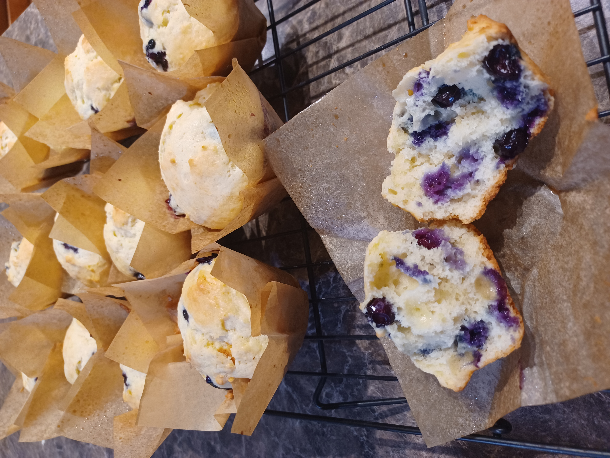
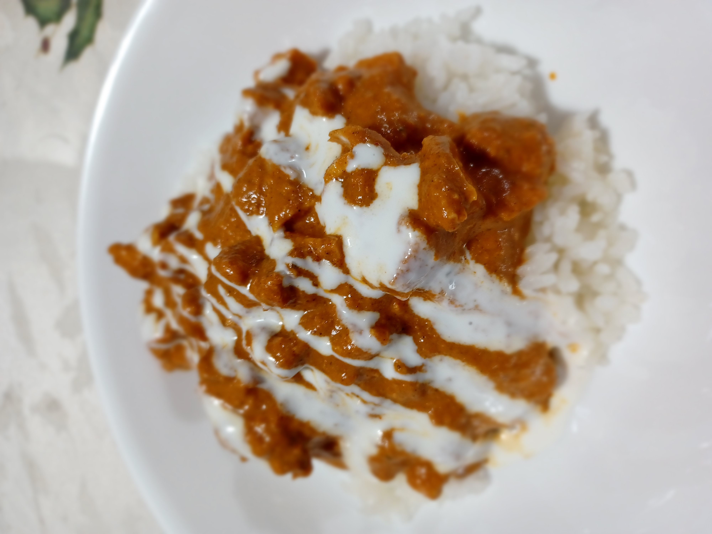
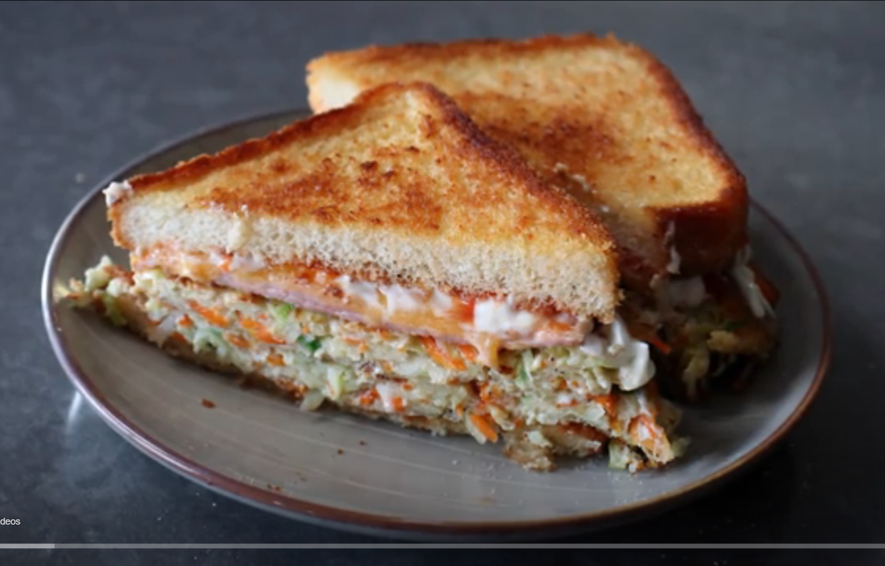
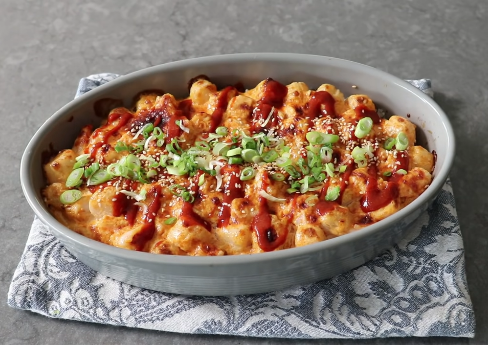
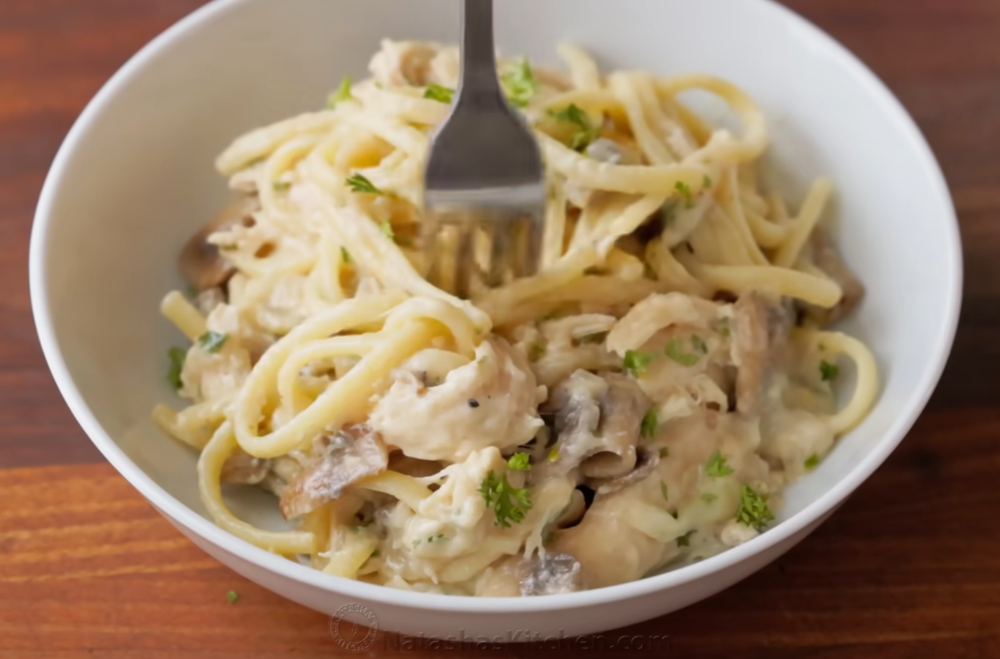

∙2 large eggs + 2 yolks ∙210g or 1c sugar ∙225g or 1c full fat sour cream∙150g or 5/8c buttermilk ∙3g or 3/4 tsp vanilla extract ∙50g or 1/4c neutral oil ∙50g or 3 1/2Tbsp butter (melted and cooled) ∙375g or 3c ap four (11.7% protein) ∙8g or 1.5tsp salt ∙12g 1 slightly rounded Tbsp baking powder∙4g or rounded 1/2tsp baking soda ∙280g or 1.5c fresh or frozen blueberries ∙lemon sugar (100g or 1/3c raw sugar + zest of 2 lemons, mixed)
Add sugar and eggs into a bowl and whisk to combine. To that, add sour cream, buttermilk, vanilla, oil, and butter. Whisk to combine. In a separate bowl measure flour, salt, baking powder, baking soda. Whisk to combine. Add wet ingredients to dry. Add blueberries and fold until just combined. Add muffin liners, if desired, then grease or spray, and fill each muffin hole (muffin hole?) with 225g or a rounded 1/2c muffin batter if using a jumbo 6-muffin pan or about 110g or 1/4c if using a standard 12-muffin pan. Top each muffin with a sprinkle of lemon sugar. Bake in preheated 350f/176c oven for 30-32min.

CHICKEN + MARINADE: 2lbs or 1 kilo boneless/skinless chicken thighs, 20g or 3 1/2 tsp salt, 10g or about 3 cloves minced garlic, 10g or about 2Tbsp minced ginger, 20g or 1 1/2 Tbsp lemon juice, 3g or 1tsp fenugreek (or garam masala if you can't find it), 10g or , 3 3/4 tsp kashmiri chili powder (or 3 to 1 paprika to cayenne if you can't find it), 200g or 3/4c greek yogurt.
SAUCE: 30g/3-4 glugs of olive oil, 150g or 1 medium onion (small diced), 50g or about 1 poblano (seeded and small diced), large pinch salt, 10g or about 2Tbsp minced ginger, 10g or about 3 cloves minced garlic, 5g or 2.5tsp garam masala, 5g or 2.5tsp turmeric, 5g or 2.5tsp cumin, 5g or 2.5tsp coriander, 5g or 2.5tsp kashmiri chili powder, 10g or 1 3/4tsp salt, 165g or 6oz tomato paste (1 small can), 425g or 1 3/4c water, 10g or 2 1/3tsp sugar, 210g or 1c heavy cream, 50g or 3Tbsp unsalted butter.
CHICKEN + MARINADE:
Combine chicken with ingredients above, rubbing marinade all over to cover chicken. Cover and refrigerate for 30min to marinate.
Preheat over to 450F/232C. Line sheet tray with foil and place chicken on tray. Load into oven and bake for about 15min. Align tray under oven broiler and broil on high until they're beginning to crisp around edges. Flip each piece of chicken to the back side and return to broil until side 2 is beginning to char and take on color. Allow to rest before cutting in to about 1.5" chunks.
SAUCE:
Preheat medium saucepan over med-high heat. Add oil, onion, poblano and salt. Stir and allow to soften for 6 min or so. Add ginger and garlic. Stir and allow to cook for about 60 more seconds. Add spices and allow to cook for 60-90 seconds until fragrant. Add tomato paste, stir, and allow to bloom for about a minute. Stir in water until paste dissolves into water and mix comes to a simmer. Cover, reduce heat to low and simmer for 20 min.
Once sauce has been cooking for 20min add in sugar and cream. Stir to combine. Add butter and stir to combine. Pulse with immersion blender until smooth.
Fold chopped chicken into the sauce.

2 eggs, 1 handful julienne cabbage, 1/2 handful julienne carrot, green onion, salt, pepper, cayenne, ham, cheese, thick white bread
Massage the seasoned veggies with your hand for 30 seconds to soften before mixing in the eggs with a fork. Grill buttered bread, cook the egg patty, top with sugar, and assemble with seared ham and cheese.

Calrose rice, seasoned rice vinegar, nori ribbons, bonito flakes, sesame seeds, bay scallops, shrimp, mayonnaise, Sriracha, soy sauce, sesame oil
Flavor fluffed rice with seasoned vinegar and seaweed, then spread into a baking dish. Toss seafood in spicy sriracha-mayo, layer it over the rice, and bake at 400°F/204°C for 20 minutes before a final broil.

12 oz thin spaghetti/linguine, 4 cups shredded chicken, 1 lb button mushrooms, onion, garlic, flour, butter, broth, half-and-half, mozzarella, parsley.
Boil pasta until al dente. Sauté the mushrooms and onions. Build a creamy roux-based white sauce in the pan, toss everything together, top with cheese, and bake at 350°F/176°C until bubbling.